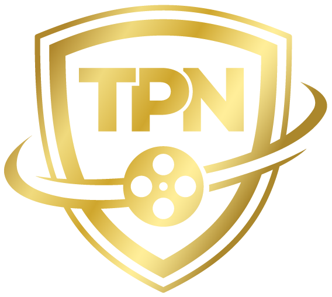

TPN Gold Certified. Hollywood-grade content security. The only independent VFX studio in Australia to hold it.

The only independent VFX studio in Australia with TPN Gold certification.
TPN Gold is not a badge you buy. It requires independent assessment by an approved auditor against MPA-backed security standards. Physical infrastructure, cyber security, access controls, incident response — all assessed, all documented, all maintained.
Major studios and streamers — Disney, Netflix, Warner Bros., Amazon, Apple — increasingly expect TPN assessment from their VFX vendors. Whether it's mandated depends on the production. For high-value IP, most don't take the risk of working with uncertified vendors. Future Associate holds Gold. You're engaging a certified partner.
Purpose-built 750sqm facility in Marrickville, Sydney — formerly a commercial premises, completely redesigned for production security. Access controlled, visitor managed, monitored 24/7. No open-plan office with passersby. No co-working space. A dedicated, controlled environment built specifically for handling confidential studio content.
3-phase power, solar generation, and 4× Tesla Powerwall 3 battery backup. The facility stays operational when the grid doesn't.
Encrypted asset transfers, VPN-secured remote access, role-based access controls, and comprehensive audit logging across the production pipeline. Assets are handled according to studio-specified security protocols — watermarked, access-gated, and never distributed beyond the production team.
Pipeline built on industry-standard tools with security baked in from intake to delivery. No workarounds, no exceptions, no unsecured handoffs.
TPN Gold requires independent assessment against the Motion Picture Association's Content Security Best Practices — not a self-assessment. Policies are documented, tested, and updated. Incident response procedures are in place and rehearsed.
The assessment covers over 200 controls across physical and cyber security domains. Holding Gold means passing all of them, not just most.
The big post houses have TPN because they have to. We earned TPN because we chose to build the infrastructure that qualifies for it. That's a different thing. It means your content is protected by a studio that treats security as part of the work, not a compliance checkbox.
TPN — Trusted Partner Network — is the entertainment industry's content security assessment program, backed by the Motion Picture Association (MPA). It sets the standard for how studios, post houses, and VFX vendors handle confidential content. Major studios and streamers increasingly expect TPN assessment from their VFX vendors, particularly on high-value productions.
TPN Gold is a high-tier certification requiring independent assessment across both physical and cyber security domains. Silver reflects a lower level of compliance. Productions working with high-value IP — franchise films, premium streaming — typically expect Gold from their VFX vendors.
Many do, depending on the production. For franchise films and premium streaming content with significant IP value, TPN assessment is increasingly expected from VFX vendors. It's a production-level decision, not a blanket rule — but uncertified studios are routinely excluded from high-value work. Future Associate is qualified to work on the full range of studio and streamer content.
Large post houses have TPN because they have the compliance teams, legal departments, and resources to manage it. An independent studio achieving Gold certification requires genuine infrastructure investment and organisational commitment. It's not handed to you because of your size — you earn it or you don't have it.
Certification requires periodic independent reassessment — it doesn't roll over indefinitely. Our Gold status is current and maintained.
In practice, it means you can engage us with the same security confidence as a major post house. Asset intake, handling, storage, transfer, and delivery all follow certified protocols. Your studio's security team has a framework to evaluate us against — and we pass it.